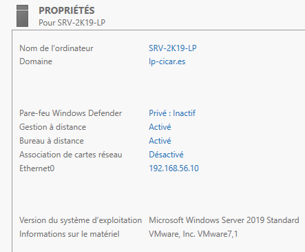

Contexte & objectifs
Dans le cadre des travaux pratiques en formation au sein de l'AFPI Alternance, j'ai réalisé le déploiement d'une infrastructure réseau Windows Server complète. L'objectif était de mettre en place un environnement d'annuaire centralisé fonctionnel, simulant une architecture réelle d'entreprise.
Ce projet m'a permis de comprendre et maîtriser les trois services fondamentaux d'un réseau Windows : l'Active Directory pour la gestion centralisée des identités, le DNS pour la résolution de noms, et le DHCP pour l'attribution automatique des adresses IP.
Environnement de travail : machine virtuelle VirtualBox avec Windows Server 2019, réseau interne simulé, poste client Windows 10 pour les tests de jonction au domaine.
Étapes de réalisation
Installation de Windows Server 2019
Création d'une machine virtuelle VirtualBox avec les ressources adaptées (4 Go RAM, 90 Go pour les deux disques ). Installation de Windows Server 2019 en mode Desktop Experience. Configuration de l'adresse IP statique 192.168.56.10/24 et du nom de la machine (SRV-2K19-LP).
Installation du rôle Active Directory
Ajout du rôle AD DS (Active Directory Domain Services) via le Gestionnaire de serveur. Promotion du serveur en contrôleur de domaine avec création du domaine lp-cicar.es. Redémarrage et vérification du bon fonctionnement du service.
Configuration du service DNS
Le DNS est installé automatiquement avec l'AD. Création des zones de recherche directe et inverse pour le domaine lp-cicar.es. Vérification de la résolution de noms avec la commande nslookup.
Configuration du service DHCP
Installation et configuration du rôle DHCP. Création d'une plage d'adresses 192.168.56.50 – 192.168.56.250, définition des exclusions, du masque de sous-réseau et de la passerelle. Autorisation du serveur DHCP dans l'Active Directory.
Création d'unités organisationnelles et utilisateurs
Création d'UO (Unités Organisationnelles) dans l'AD pour structurer les comptes. Ajout d'utilisateurs et de groupes. Configuration des droits d'accès et des mots de passe selon les politiques de sécurité.
Jonction d'un poste client au domaine
Configuration d'un poste Windows 10 en VM pour pointer vers le serveur DNS 192.168.56.10. Jonction au domaine lp-cicar.es. Vérification de la connexion avec un compte utilisateur du domaine.
Captures d'écran
Installation Windows Server

Configuration DNS

Plage DHCP
Cliquez pour ajouter une capture
Utilisateurs & UO dans l'AD
Cliquez pour ajouter une capture
Jonction poste client au domaine
Cliquez pour ajouter une capture
Compétences mobilisées
Gérer le patrimoine informatique
Mise en place et vérification des niveaux d'habilitation associés au service AD. Recenser les ressources numériques du domaine.
Mettre à disposition des utilisateurs un service informatique
Déploiement et configuration des services AD, DNS et DHCP. Tests de validation et jonction de postes clients.
Travailler en mode projet
Planification des étapes d'installation, respect des délais de la période de TP (15/10 – 28/10/2024).
Organiser son développement professionnel
Mise en œuvre d'une veille sur les services Windows Server, exploitation de la documentation Microsoft officielle.
Difficultés rencontrées & solutions
Le poste client ne rejoignait pas le domaine
Le DNS du poste client pointait vers un mauvais serveur. Après avoir forcé l'adresse DNS du poste vers 192.168.1.1 (le serveur), la jonction au domaine a fonctionné correctement.
Le service DHCP n'attribuait pas d'adresses
Le serveur DHCP n'était pas autorisé dans l'Active Directory. Après avoir effectué l'autorisation via la console DHCP (clic droit → Autoriser), le service a démarré et attribué les adresses normalement.
Conflit d'adresses IP entre les VMs
L'adresse statique du serveur était dans la plage DHCP, ce qui créait des conflits. Résolu en définissant une exclusion dans la plage DHCP pour l'adresse du serveur et en vérifiant la configuration réseau des VMs sur VirtualBox (mode réseau interne).